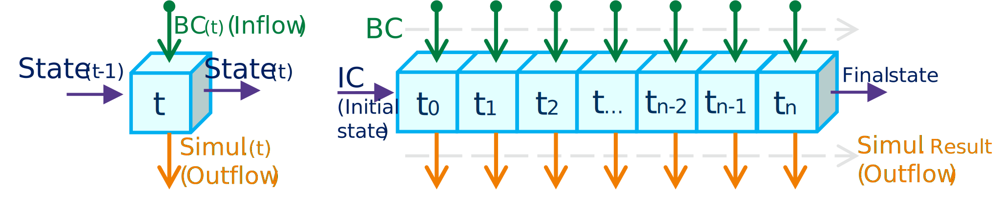
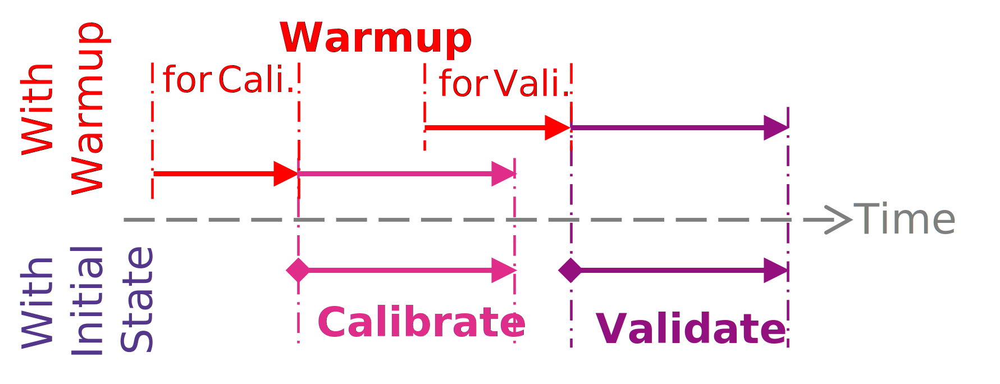
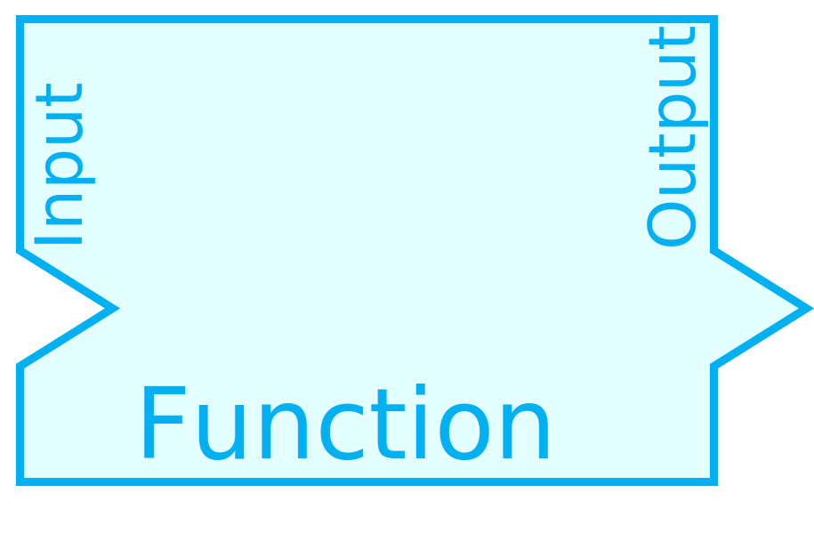
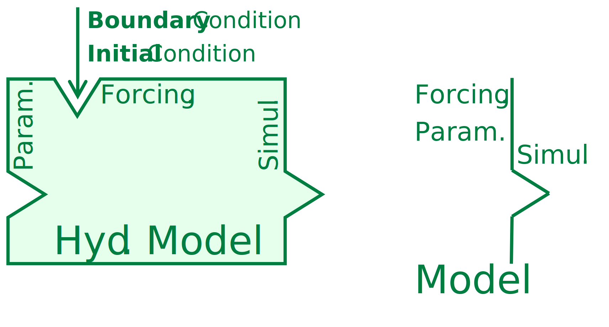
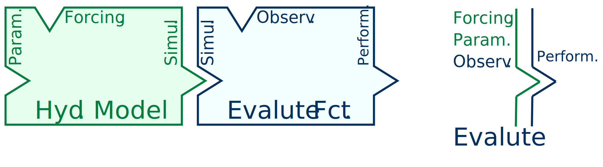
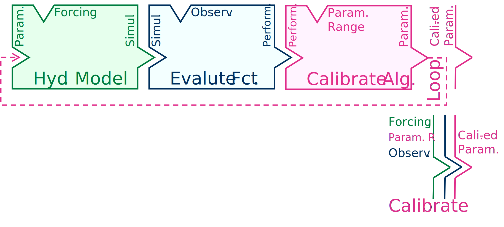
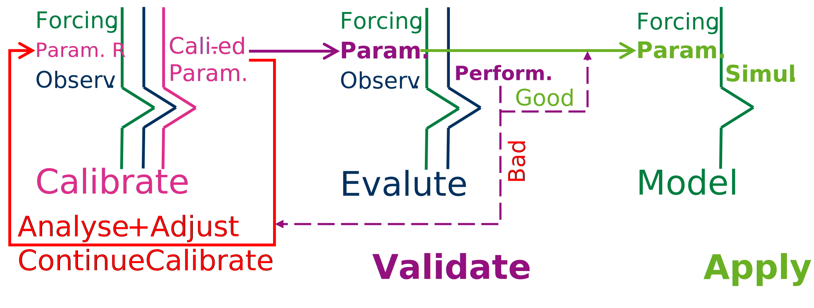

Concept of Modelling
Within the process of hydrological modeling, there are fundamental concepts that play a crucial role. In this article, we will elucidate these concepts through illustrative figures, enhancing your comprehension. These concepts can be categorized into two main parts: the Data part, which encompasses aspects related to input data, parameters, and parameter ranges, and the Process part, which outlines the workflow of the entire modeling process. By exploring these concepts and their visual representations, you’ll gain a deeper understanding of hydrological modeling.
1 Data
In terms of data, it can encompass various types of information, including forcing data such as time series, initial states, as well as the parameters. These values are essential inputs that the model relies on during the simulation process.
1.1 Boundary Condition (Forcing Data)
For hydrological modeling, you need data that describes the boundary conditions or forcing factors affecting the model. They define how water and other related variables enter or exit the modeled domain. This includes information on precipitation, temperature, humidity, and other meteorological variables.

1.2 Initial Condition Data & Warm-up Time
Initial conditions represent the state of the watershed or catchment at the beginning of the simulation.
However, in many cases, the exact initial conditions are unknown or difficult to measure accurately. To address this uncertainty, hydrological models incorporate a warm-up period. This warm-up period refers to the initial phase of model simulation where the model runs to establish a stable or equilibrium state before commencing the actual simulation.
It’s crucial to ensure that the warm-up period is of sufficient duration to reach a stable state. Typically, this period should span at least two complete cycles of the dominant hydrological processes within the watershed. This requirement ensures that the model has the opportunity to capture the full range of variability associated with these processes.
The periodicity of hydrological processes is a crucial consideration when implementing a warm-up period. By assuming that the initial state during warm-up has only a minimal influence, we rely on the repeated cycles of hydrological events. During the second cycle, the system tends to reach its maximum or minimum state, which is indicative of equilibrium. Subsequently, the simulation becomes stable, and this equilibrium state serves as the initial condition for the formal simulation.

1.3 Parameter
Parameters are essential components of hydrological models for several reasons. Firstly, hydrological models cannot simulate the entire complexity of the real world, so parameters are used to represent various physical characteristics and processes. Secondly, real-world measurements are often limited in scope and may not capture all relevant data across the entire watershed. Parameters help bridge these gaps by allowing models to make predictions based on available information.
There are three main categories of hydrological models based on their use of parameters:
Physical-based models (white box): These models aim to simulate hydrological processes with a high level of detail. They rely on deterministic formulas and aim to represent physical processes as accurately as possible. Ideally, physical-based models do not require the use of parameters, as all processes are simulated with detailed data and deterministic equations. However, in practice, some level of parameterization may still be necessary, especially for processes that are not well understood or difficult to represent mathematically.
Conceptual models (gray box): Conceptual models are the most commonly used hydrological models. They strike a balance between complexity and simplicity. These models use parameters to represent various physical characteristics of the watershed, such as soil properties, land use, and drainage patterns. Calibration, a process of adjusting parameter values to match observed data, is typically needed to make the model’s predictions consistent with real-world conditions.
Empirical and data-driven models (black box): Empirical models rely heavily on observed data and may not explicitly represent physical processes. Instead, they use statistical relationships to make predictions. These models often require fewer parameters than physical-based or conceptual models but may still involve parameter estimation based on data.
1.3.1 Initial Parameters
Initial parameters are the starting values for model parameters that are often suggested based on previous research or prior knowledge. These initial parameter values are used to test the fundamental functionality of the model and its applicability to the study area. While these initial parameters may provide a reasonable starting point, they may or may not be a good fit for the specific study area and objectives.
1.3.2 Parameter Range
Parameter ranges define the range of allowable values that model parameters can assume within specified bounds. While a broad parameter range can provide a greater opportunity to find optimal parameter values, it also expands the search space, making it more challenging to identify the best-fitting parameters.
Parameter ranges can be categorized into two main types:
Physical Range: This refers to the range of parameter values that are physically meaningful and are constrained by the fundamental characteristics of the system being modeled. For example, hydraulic conductivity in groundwater models cannot be negative, so it has a physical lower bound of zero. Physical range limits ensure that parameter values are consistent with the underlying physical processes.
Regional Range: In addition to the physical limits, parameters may have regional variations based on the specific characteristics of the study area. These regional variations account for local geological, climatic, or land-use differences that influence parameter values. Regional ranges help to capture the heterogeneity within a larger study domain and allow for parameterization that reflects local conditions.
Balancing the scope of parameter ranges is essential in hydrological modeling. While broader ranges offer flexibility, they also increase the complexity of parameter estimation. The challenge lies in finding a balance that allows for the exploration of diverse parameter values while ensuring that the model remains physically meaningful and regionally applicable.
1.3.3 Calibrated Parameters
Calibrated parameters are the parameter set that has been adjusted and fine-tuned during the calibration process. These parameters represent the current best-fit values for the hydrological model in a specific study area. They are chosen to optimize the model’s performance and ensure that it provides accurate predictions and simulations based on observed data.
1.3.4 Validated Parameters
Validated parameters are parameters that have been **verified* through comparison with observed data to ensure that the model accurately represents the real-world system.
1.3.5 Parameter Mapping with Groups
Parameters in hydrological modeling vary based on the physical characteristics of the system being studied. However, in reality, different regions within a study area often exhibit distinct physical characteristics. Consequently, when performing simulations, it becomes necessary to calibrate parameters for each Hydrological Response Unit (HRU), which represents a homogeneous area within the study domain.
Calibrating parameters for every HRU can be a formidable task, as it would involve a substantial number of individual calibrations. To address this challenge, researchers often employ a strategy of grouping HRUs with similar characteristics. By doing so, they can map parameters to these groups, effectively reducing the parameter calibration space.
One of the most commonly used grouping criteria includes categorizing HRUs based on factors such as land use, soil type, soil class, or climate zone. These characteristics often play a significant role in shaping the hydrological behavior of a region.
2 Process
In hydrological modeling, there are several common steps, including model running, calibration, validation, and uncertainty and sensitivity analysis, which collectively form the essential framework for model development and evaluation.
2.1 Model Running
The core step in hydrological modeling involves running the model, which treats the model as a function that calculates a process with the input data to produce output data.

This process utilizes the provided boundary conditions, initial conditions, and parameter values to simulate the hydrological processes within the watershed or catchment. Boundary conditions and initial conditions are often collectively referred to as forcing data or input data.

2.2 Evaluation
After the model run, an evaluation process is conducted to assess the performance of the model. This involves comparing the model’s simulated output to observed data or reference values. Various performance metrics and statistical measures are used to determine how well the model simulates real-world conditions.

2.3 Uncertainty and sensitivity
Uncertainty and sensitivity analysis are crucial components of hydrological modeling, helping us understand the reliability of model predictions and the influence of different input parameters. Uncertainty analysis assesses the overall uncertainty in model outputs, considering various sources of uncertainty, while sensitivity analysis identifies which input parameters have the most significant impact on model results. Together, they provide valuable insights into the robustness and reliability of hydrological models.
2.4 Calibration
Calibration is a critical step in hydrological modeling. It involves adjusting the model’s parameters to improve its accuracy and alignment with observed data. Optimization techniques are often used to find parameter values that minimize the difference between model output and observed data.

2.5 Validation
Once the model has been calibrated, it is essential to validate its performance. Validation involves testing the calibrated model against independent datasets or data from a different time period. This step ensures that the model’s performance is not solely tailored to the calibration data but remains reliable for a broader range of conditions.
